Skydiving offers unparalleled freedom and requires mastery of body flight, canopy control, and precise safety protocols. It is the necessary starting point for most advanced aerial pursuits, providing the fundamental skills required to safely explore the world above.
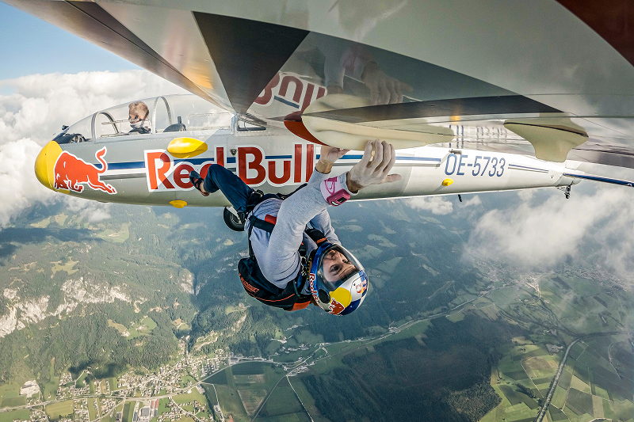
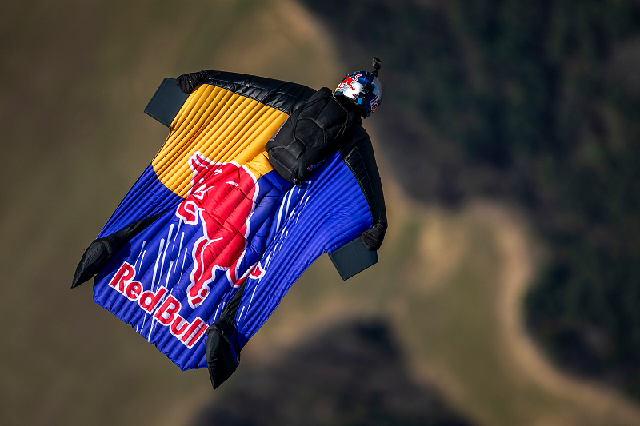
Wingsuit offers unparalleled gliding control and requires mastery of aerodynamic principles, proximity navigation, and specialized safety protocols. It is the pinnacle of low speed, high-performance human flight, leveraging technological apparel to safely explore the aerial environment along fixed trajectories.
Unlike skydiving, the BASE jumping rig contains only one parachute (no reserve). The design is optimized for rapid deployment and a low-profile fit for tight exits.
We have the first integrated system to use bio-feedback sensors to provide skydivers with real-time predictive flight dynamics. This technology calculates body position and trajectory milliseconds before they are needed.
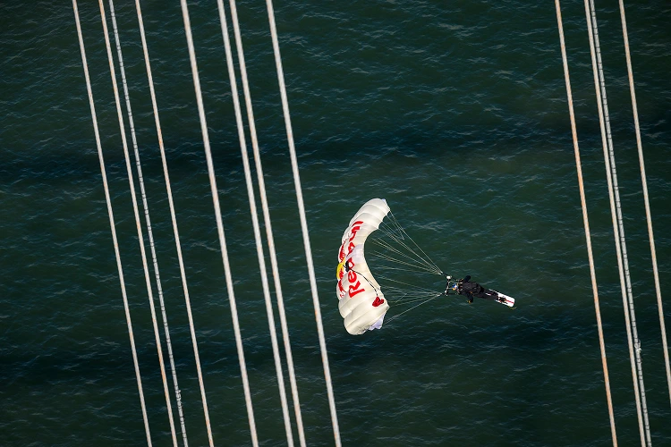
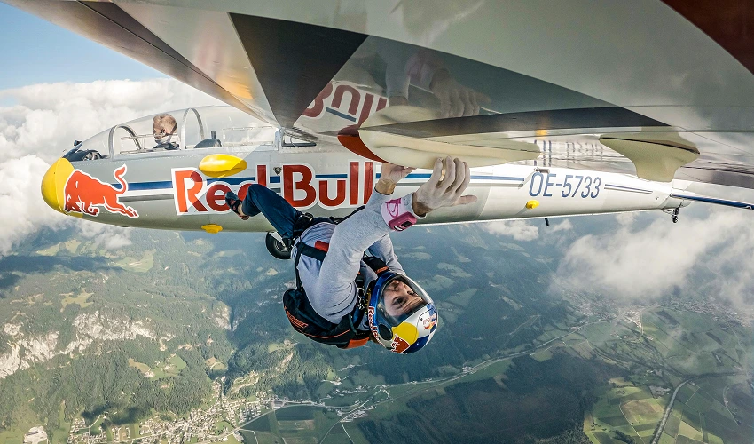
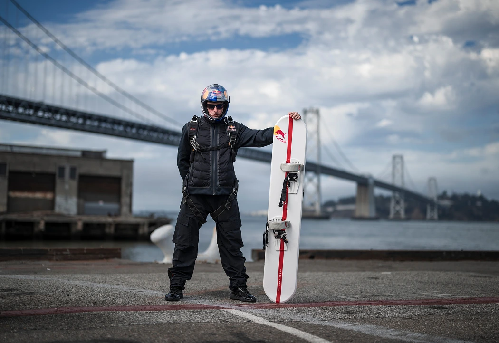
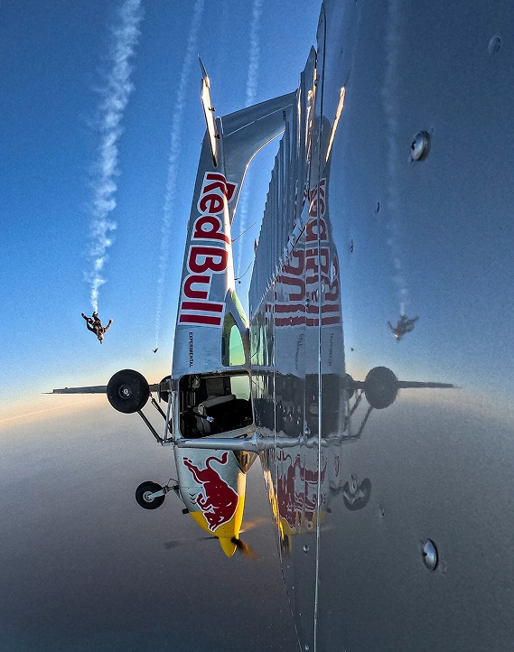
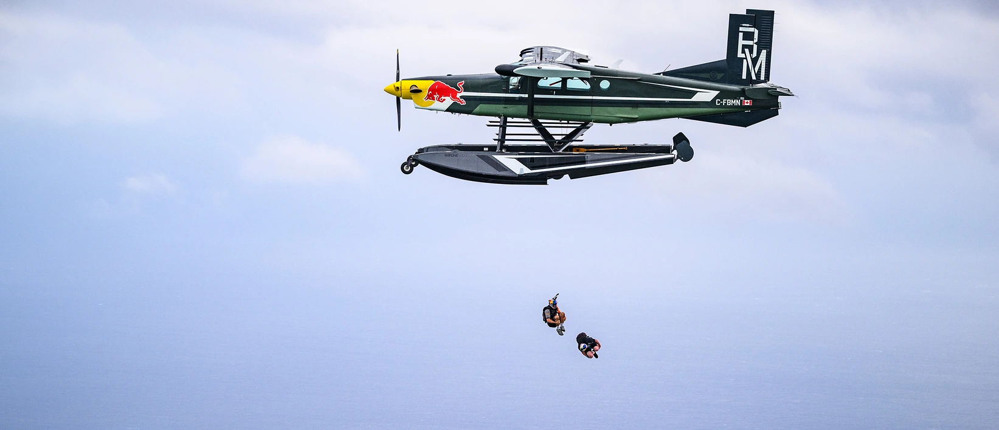
The wingsuit is the defining piece of gear, transforming the human body into an aerodynamic surface. Content should detail the fabric technology to maximize the ratio for long glides.
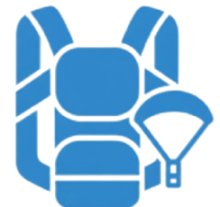
Wingsuit pilots must use specialized, parachute systems (rigs) designed with the critical wing surfaces. This ensures maximum forward speed and gliding performance, essential for successful trajectory and distance management.
Navigation in proximity flying is highly technical. Gear includes high-precision GPS and altimeters to monitor ground clearance, vertical speed (V/S), and glide ratio, providing pilots with crucial data to manage energy.
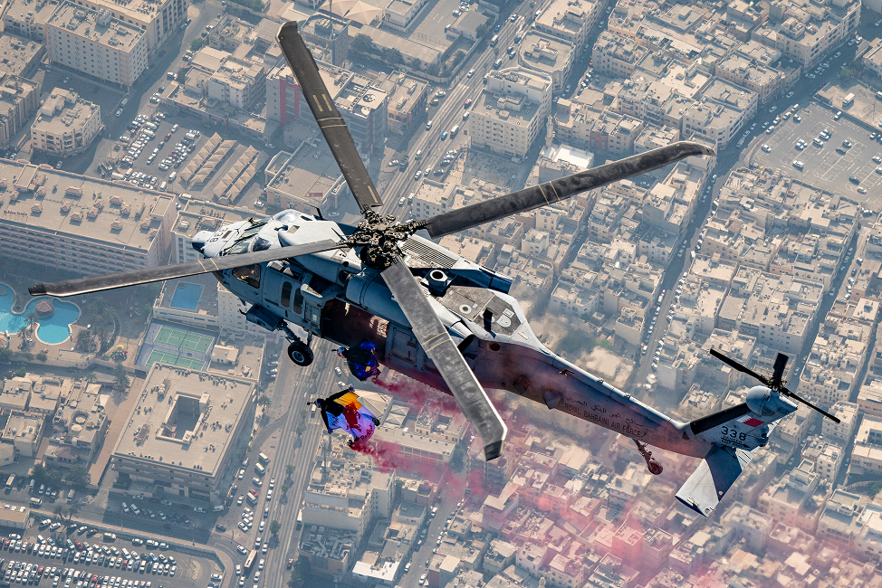
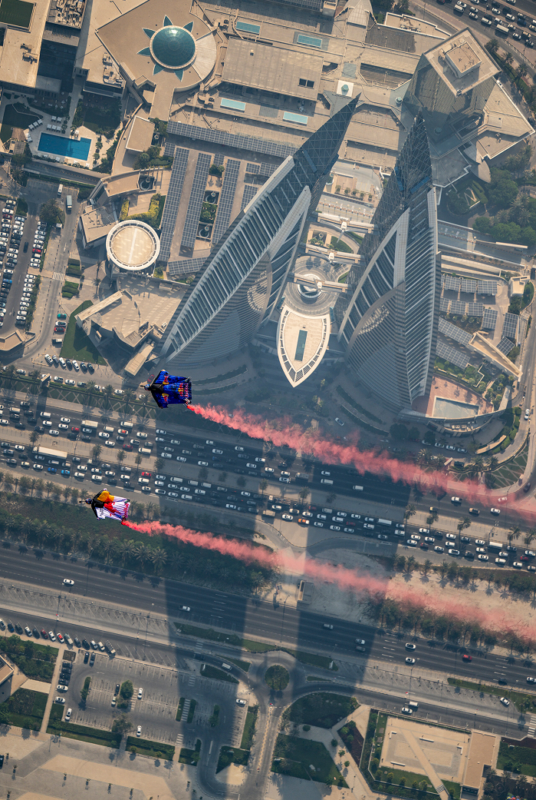
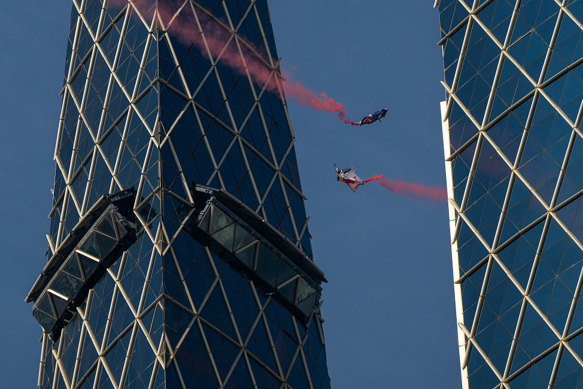
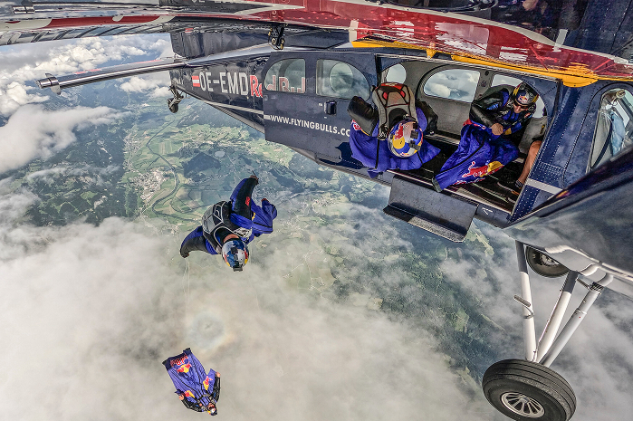
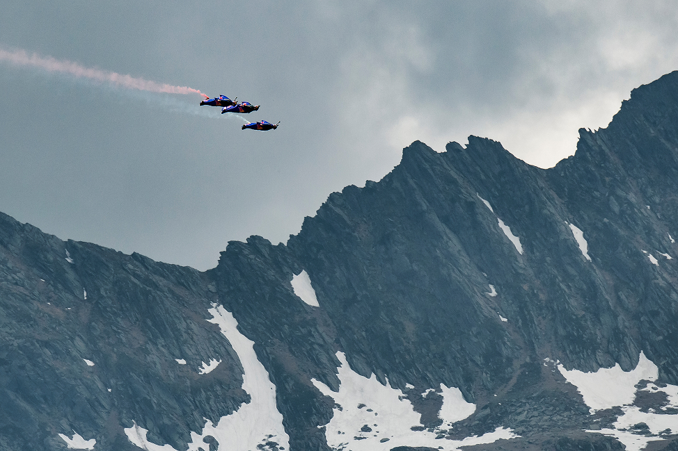
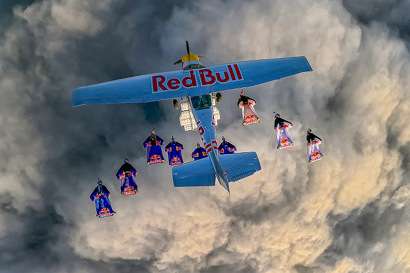
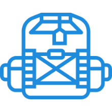
Unlike skydiving, the BASE jumping rig contains only one parachute (no reserve). The design is optimized for rapid deployment and a low-profile fit for tight exits.
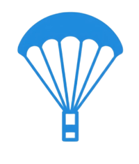
This is the critical safety component. It must be larger and designed for near instant deployment from the moment of the exit, ensuring the canopy opens during the minimal time available.
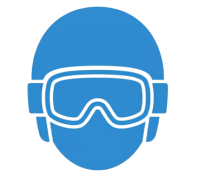
The helmet itself is engineered for rapid inflation at low speeds and low altitudes, offering stability and quick control during the brief descent.
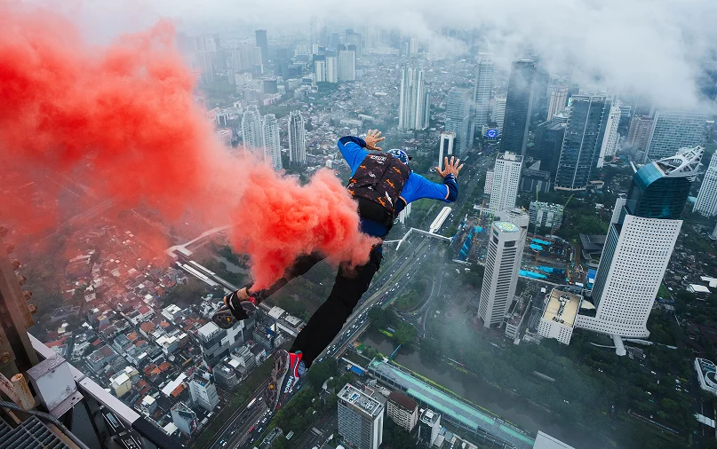
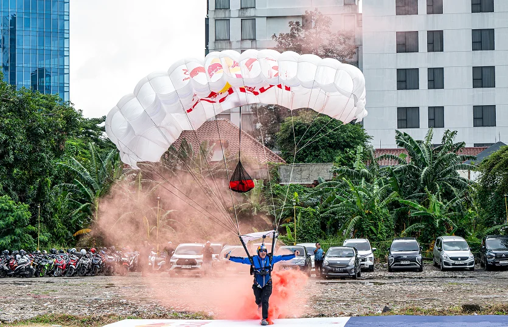
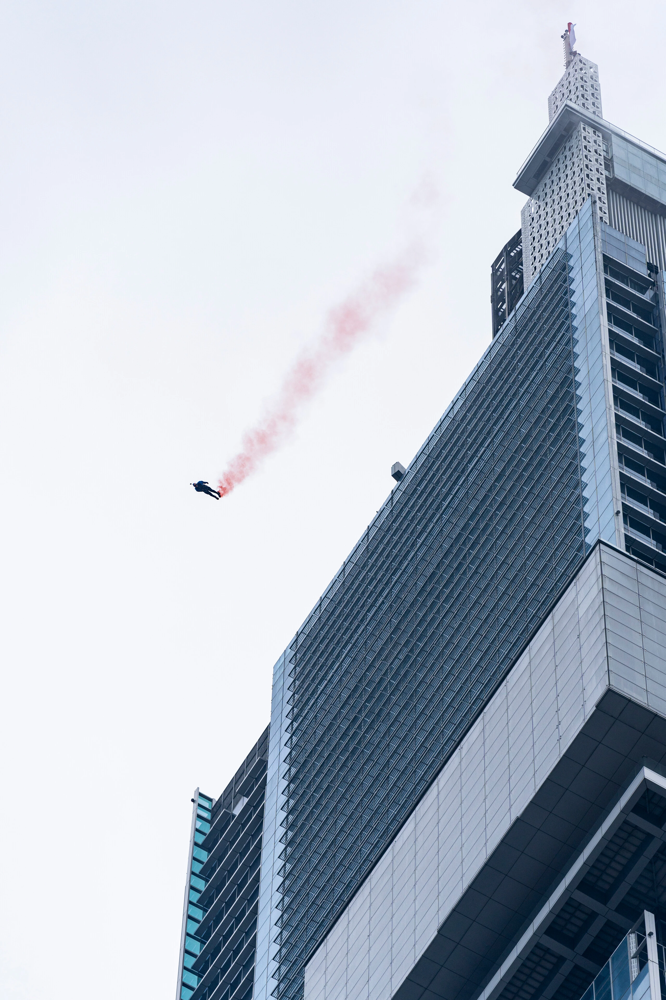
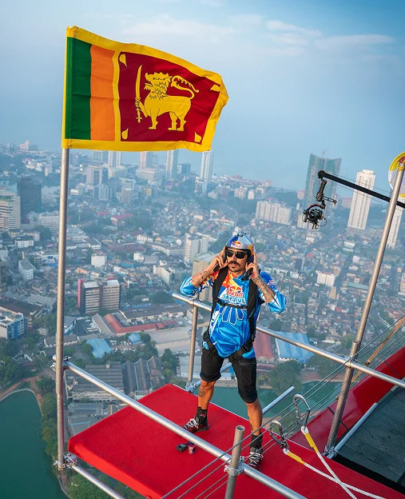
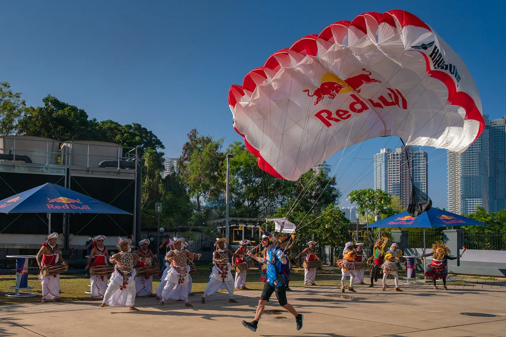
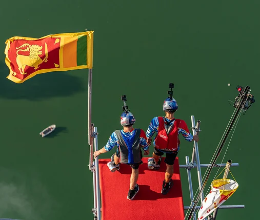